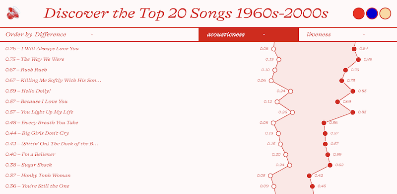
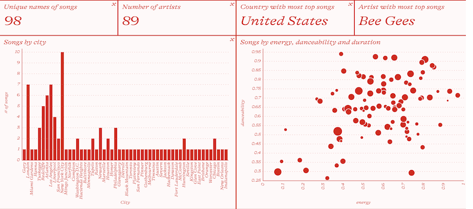
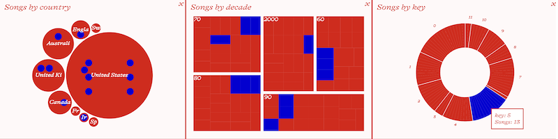
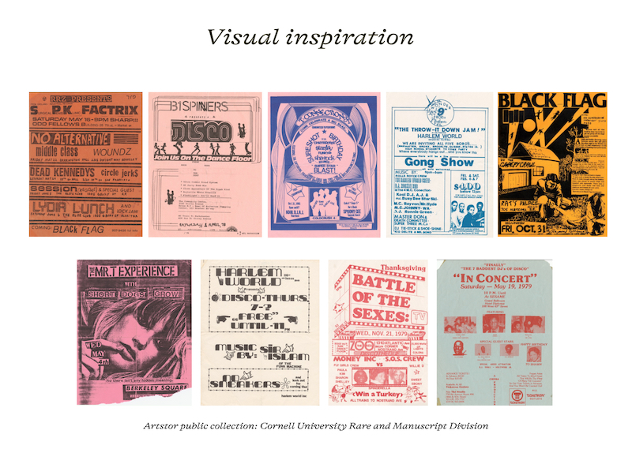
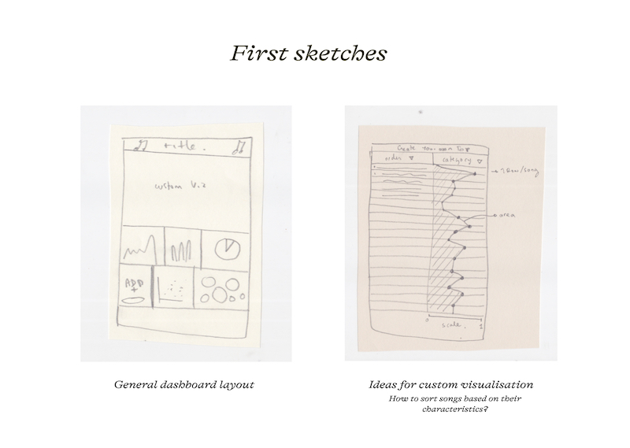

Songs from the recent past is a tool to create data visualization compositions using data from Spotify's Top Songs from the past decades with a lo-fi aesthetic.
Inspired by the flyers from live hip-hop, punk, and disco shows in the 70s and 80s, made using cut-outs, photographs, or typography and then copied as cheaply as possible. An exercise in data visualization, composition, and dashboarding tool possibilities.
Build your own
Role: Web development, UI Design, Data visualization
Technologies: React, D3.js, TypeScript




